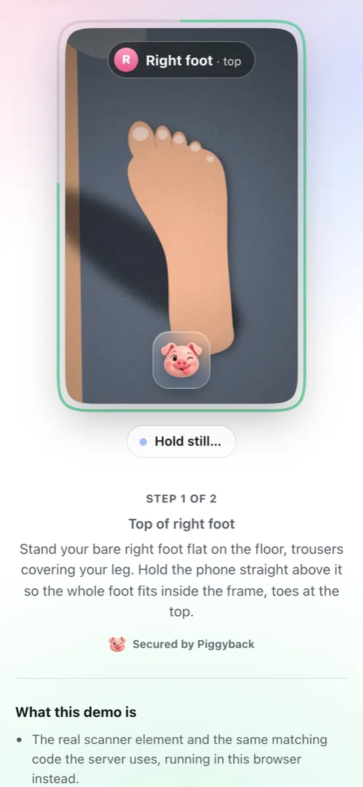
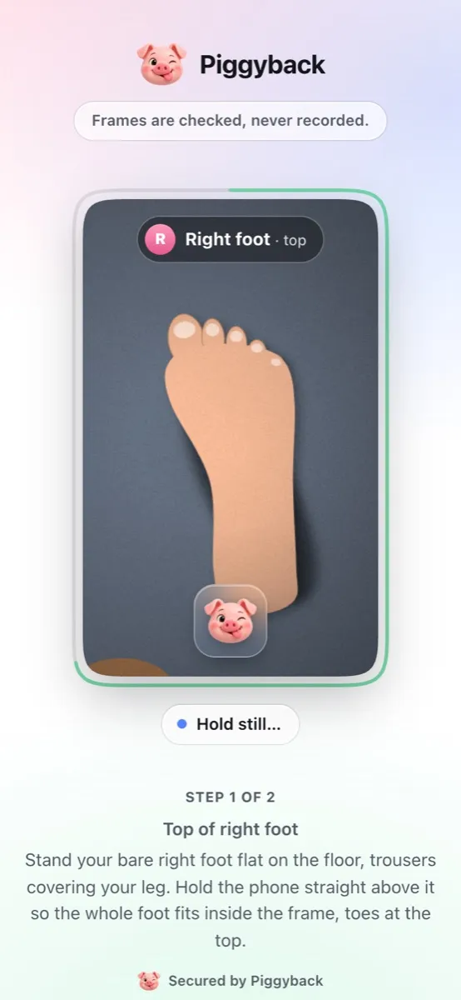
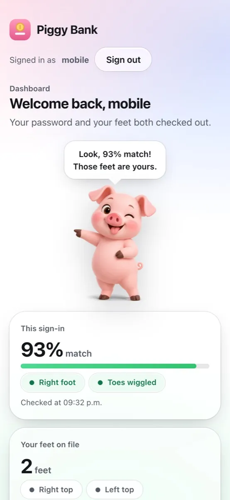
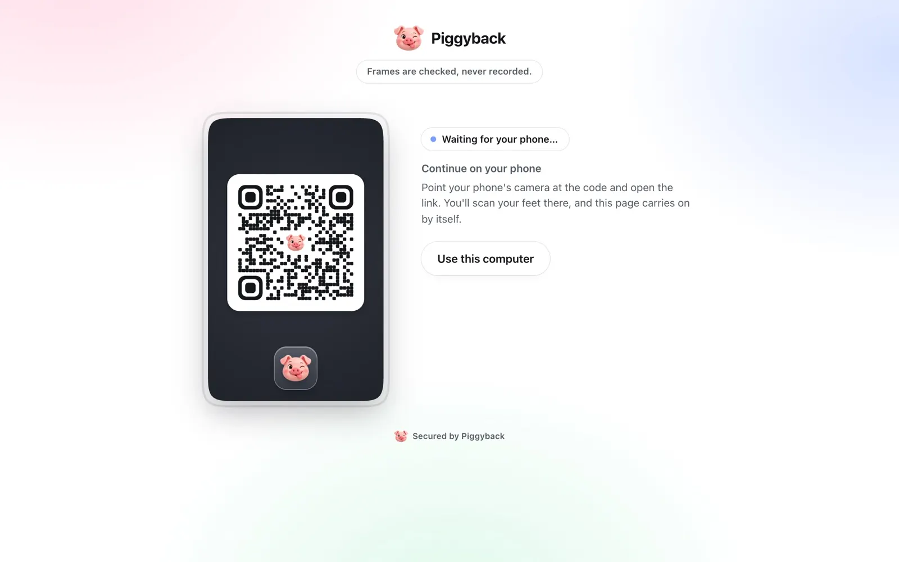
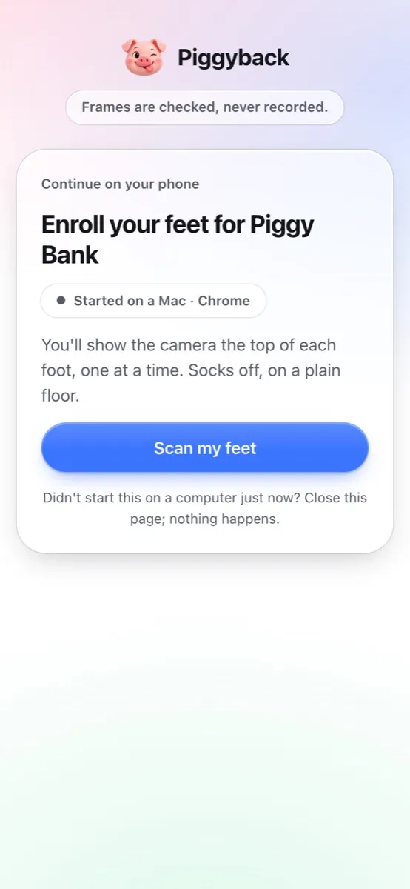

Two-Feet Authentication.
Piggyback is a second factor you pass barefoot. Show your phone the foot it asks for, wiggle your toes when it says so, and you're in. It sits on top of the login you already have.
Demo: any name, the password demo, then your feet.
Works with
Any backend, by redirect<piggyback-auth>
Okta
Entra ID
Ping
Keycloak
Auth0
How it works
Put your best foot forward. It runs in the phone's browser, so there's no app to install: a plain floor and bare feet will do.
-

Enroll once
Show the top of your right foot, then your left. Each one is saved after a couple of seconds held still, then shown back so you can redo it.
-

Show the foot it asks for
At sign-in the server picks a foot. Piggyback compares its outline, width profile, proportions, skin texture and tone with the one you enrolled.
-

Wiggle your toes when asked
Once it matches, keep your heel down and wiggle your toes. A photo of your feet can't.
Signing in on a computer
- It shows a QR code. “Continue on your phone” holds a one-time link that expires in two minutes.
- The phone scans it. No app to install: it opens in the browser and asks before it carries on.
- The computer finishes by itself. Feet on the phone, sign-in on the laptop.


Why feet
-
Nothing to carry
No key fob to foot the bill for, no code to retype. Your phone's camera and the feet you walked in on.
-
The server picks the foot
Each sign-in asks for the left or the right foot at random, so nobody can prepare the right one in advance.
-
Photos don't pass
The toes have to move on cue while the heel and the floor around them stay put. A photo moves as one flat picture, however it's tilted or zoomed, and a finger over the toes is caught.
-
The pig judge
A small pig reacts to each scan. His reactions come from image texture, not your foot's size or shape, and play no part in the decision.
For developers
Keep your password or SSO. Piggyback adds the feet check, decides on the server, and gives your backend a signed, one-time result.
<!-- Drop the scanner into your own page -->
<script type="module"
src="https://feet.example.com/sdk/piggyback.js"></script>
<piggyback-auth
server="https://feet.example.com"
session-token="{{ session_token }}"></piggyback-auth>
<script>
document.querySelector("piggyback-auth")
.addEventListener("piggyback-complete", e =>
exchange(e.detail.code));
</script>Keeps people on your page. Theme it with --pb-accent, --pb-bg and friends; on a computer it offers the phone handoff by itself.
// Start a session and send the user to the hosted page
const s = await feet.post("/v1/sessions", {
user_id, purpose: "verify", redirect_uri, state,
});
res.redirect(s.hosted_url);
// Back on your redirect_uri: swap the code for a signed result toeken
const { result_token } =
await feet.post("/v1/token", { code });
// Check iss, aud, sub and amr against the JWKS, then mark MFA doneWorks with any stack, like Duo's prompt. The result toeken (fine, token: an ES256 JWT) lives five minutes.
# Register your identity platform as a client
$ node server/cli.js add-client --name "Okta" \
--redirect-uri <its callback URL>
# Then point the platform at the discovery document
Issuer https://feet.example.com
Discovery /.well-known/openid-configuration
Scope openid
Flows code + PKCE, or id_token by form_postThe platform names the user, Piggyback checks the feet, and an id_token comes back. The per-platform recipes follow each vendor's documented model and haven't been run against a live tenant yet.
Frames are checked, never recorded.
No digital footprint: what's kept is a few hundred numbers about your foot, not a picture of it.
Looked at, then dropped
Frames are analysed in memory and thrown away. Only measurements are kept: numbers that describe a foot, not a picture of one.
Encrypted at rest
Foot templates are encrypted with AES-256-GCM and bound to the app and the user they belong to.
On your own server
You run it, you hold the keys. Every decision is made there, and match scores never reach the browser.
Gone on request
One call, DELETE /v1/users/:id, removes someone's feet for good, when they close their account or want to enroll again.
Limits
Piggyback is a prototype. Matching was tuned on drawn sample feet, not real ones, and a video of your toes played back in time with the prompts could pass the liveness check. Use it alongside a passkey or an authenticator app, not instead of one.
Foot templates are biometric data: get consent, honour deletion and check the law where your users are. Before production
Questions
Does it work with socks?
No, it can't count toes through cotton. Socks off, on a plain floor; a floor lighter or darker than your skin and good light help most.
Which foot do I show?
Whichever one it asks for. At sign-in the server picks a foot, and the lens shows its outline so you know which one.
Can someone just use a photo of my feet?
No. After the match, the scanner asks you to wiggle your toes, and checks that the toes moved on their own while the floor around them stayed put. A photo fails however it's moved. A video played back in time with the prompts could pass, which is why Piggyback is a second factor next to your password, not the only one.
My laptop's camera can't see my feet.
On a computer it shows a QR code instead. Scan it with your phone, show your feet there, and the computer carries on by itself.
What exactly gets stored?
Measurements, not pictures: a few hundred numbers per frame, a couple of frames per foot, encrypted and tied to the app and the user. The frames themselves are analysed in memory and dropped.
What if I can't, or would rather not, use my feet?
Apps using Piggyback should always keep another way in, like a passkey or an authenticator app. The hosted page can offer “Use another sign-in method”.
Step right in
Sign in to Piggy Bank, the demo app, with any name and the password demo. Then show it your feet.